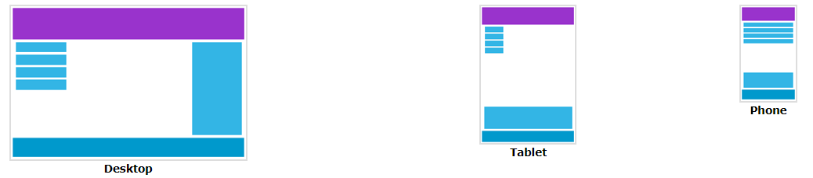

A principal função do design responsivo é fazer o seu site ter uma boa aparência em qualquer dispositivo, independentemente do tamanho da tela. Para isso, usamos apenas HTML e CSS.
Páginas da Web podem ser exibidas em vários dispositivos diferentes: desktops, tablets e celulares. Seu site deve ter boa aparência e ser fácil de usar, independentemente do dispositivo. As páginas não devem excluir informações para se ajustarem a dispositivos menores, em vez disso devem adaptar seu conteúdo:

O design responsivo usa HTML e CSS para redimensionar, ocultar, reduzir, aumentar ou mover o conteúdo, de forma que tenha boa aparência em qualquer tipo de tela.
Viewport é a área visível de uma página da Web. Ele varia de acordo com o dispositivo e varies é menor em dispositivos móveis.
Antes dos tablets e celulares, as páginas da Web eram projetadas apenas para telas de computadores e costumavam ter um design estático com um tamanho fixo. Quando começamos a navegar pela Internet usando tablets e smartphones, as páginas fixas eram grandes demais para se adequarem ao viewport. Para corrigir isso, os navegadores desses dispositivos reduziam toda a página para ajustar à tela. Isso não era o ideal, mas foi uma solução rápida.
O HTML5 introduziu um método que nos possibilita controlar o viewport: a tag <meta>. Use sempre este elemento para definir o viewport em todos os sites que criar:
<meta name="viewport" content="width=device-width, initial-scale=1.0">
Isso instrui o navegador sobre como controlaras dimensões e o escalonamento da página.
A parte width=device-width define a largura da página para ser igual à da tela do dispositivo de exibição. A parte initial-scale=1.0 define o zoom inicial ao carregar a página pela primeira vez no navegador.
Os usuários estão acostumados a rolar as páginas da Web verticalmente tanto no desktop, quanto em dispositivos móveis, mas não horizontalmente! Então, se o usuário for forçado a rolar horizontalmente, ou tiver que reduzir o zoom, para ver toda a página da Web, ele pode não gostar da experiência. Algumas regras a seguir:
width: 100%. Além disso, tenha cuidado ao usar valores de posicionamento absolutos, já que isso pode fazer com que o elemento fique fora do viewport em dispositivos menores.Muitas páginas da Web baseiam-se em uma visualização de grade, o que significa que ela é dividida em colunas. Essa visualização é útil porque simplifica o posicionamento dos elementos.
Uma visualização em grade responsiva geralmente apresenta 12 colunas e tem uma largura total de 100%, e se exapnde e reduz ao redimensionar a janela do navegador.
Este exemplo responde ao redimensionamento e sempre ocupa 100% do espaço disponível.
E aqui cabe um aparte ao exemplo: sempre devemos criar a página primeiro para dispositivos menores! Podemos adicionar quantos pontos de quebra forem necessários: um para celulares, outro para tablets, e assim por diante. Os pontos de quebra comuns são os seguintes:
/* Dispositivos muito pequenos (celulares, <= 600px) */
@media only screen and (max-width: 600px) {...}
/* Dispositivos pequenos (tablets em modo retrato e celulares grandes, >= 600px) */
@media only screen and (min-width: 600px) {...}
/* Dispositivos médios (tablets em modo paisagem, >= 768px) */
@media only screen and (min-width: 768px) {...}
/* Dispositivos grandes (laptops/desktops, >= 992px) */
@media only screen and (min-width: 992px) {...}
/* Dispositivos muito grandes (laptops/desktops, >= 1200px) */
@media only screen and (min-width: 1200px) {...}
Para definir uma imagem responsiva, que escalona de acordo com o tamanho da tela, defina width: 100% e height: auto. Se a imagem tiver uma resolução muito alta, use a propriedade max-width.
Neste exemplo, foi adicionada uma imagem responsiva a um site responsivo.
As imagens do plano de fundo também podem responder ao redimensionamento da janela do navegador. Eis três maneiras de fazer isso:
background-size como "contain" para o fundo ser redimensionado de acordo com a área do conteúdo. Este método mantém a razão de aspecto (a proporção entre a largura e a altura).background-size como "100% 100%" para o fundo se esticar e cobrir toda a área do conteúdo.background-size como "cover" para o fundo se redimensionar para cobrir toda a área do conteúdo. Este valor mantém a razão de aspecto e parte da imagem pode ser cortada.Use uma consulta de mídia com min-device-width, em vez de min-width, para verificar a largura do dispositivo, em vez da largura do navegador. Dessa forma, a imagem não muda ao redimensionar a janela do navegador.
<picture>Esse elemento oferece maior flexibilidade ao escolher recursos de imagem: ao invés de definir somente uma imagem, que é redimensionada com base na largura do viewport, é possível definir várias imagens que se adéquam melhor ao viewport do navegador.
Com este elemento, definimos várias "sources" e a primeira que se adequar ao viewport atual é exibida. Saiba mais.
O atributo srcset é obrigatório e defines a fonte da imagem. O atributo media é opcional e aceita media queries. Também devemos definir um elemento <img> para navegadores que não oferecem suporte ao elemento picture.
Assim como para imagens, há duas maneiras de definir um vídeo responsivo: com a propriedade width: 100% e com a propriedade max-width: 100%.
Mais informações sobre design responsivo no w3schools:
Playlist de vídeos sobre responsividade com HTML e CSS: Kevin Powell